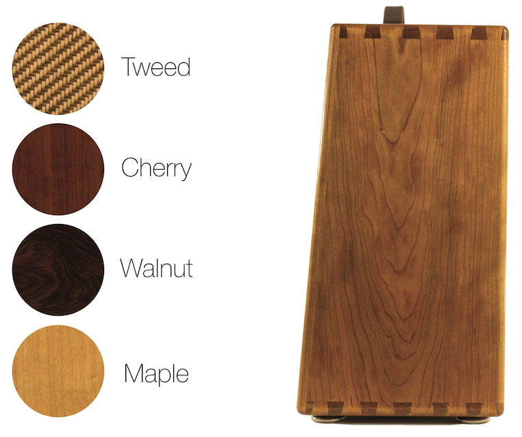
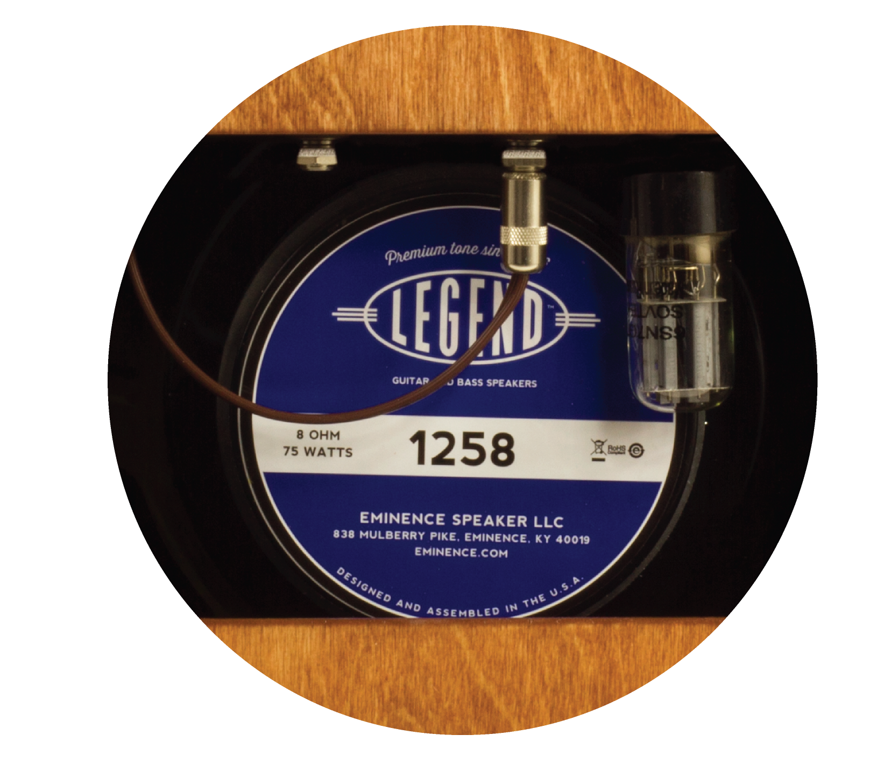

Vintage tone meets modern engineering in this no compromises combo amp designed for the serious gigging musician. Our engineer Jim Pitman has been playing electric and steel guitar for over 40 years and designed this amp as a modern solution to vintage tone. With a sound hailing back to the classic tweed amps of old, this versatile amp also delivers an extended bass range for the and bass players.The tone is shaped by the 6SL7 and 6SN7 Octal tube based preamp. Utilizing a high quality solid state power stage we call the “Tube Buffer” Lets this amp fill a venue while only weighing in at 32lbs. Available in tweed as well as cherry, walnut, maple, and your choice of speaker, these amps are each expertly hand crafter locally in Vermont.

The faceplate resides in a discreet compartment in the top of the amp to keep the knobs and switches safe during travel. Opening the lid reveals the beautifully lit interior with an angled faceplate that is perfectly visible no matter if you are sitting or standing. On the faceplate you will see a traditional passive tone section followed by an all tube effects loop that can be set to either serial or parallel.

Based in Waterbury Center Vermont, Pitman Audio hand makes every Octal 70.
We source as much material as possible locally, even down to the oils we finish our bare wooden cabinets with. The dovetail jointed, hand made, cabinets come in tweed and beautiful oil stained wood options.

The Eminence Legend 1258 comes standard, chosen for its vintage tone and high end clarity. We know how personal speaker choice can be so any standard sized 12” speaker can be equipped.

Nothing can replace the classic tone of a real tube preamp, so we didn’t. Designed from the ground up using nothing but the highest quality components, the 6SL7 and 6SN7 octal tube based preamp with all tube effects loop delivers truly boutique sound with clarity and warmth. From the carbon film resistors, and the polypropylene capacitors in the tube section to the metal film resistors in the solid state section, all component types are carefully chosen for the role they play in the circuit ensuring both long term reliability and the best fidelity.

The tube section is followed by our solid state “Tube Buffer”. Taking the place of the output transformer, it simply replicates the tube signal. reinforcing the current to match the speaker impedance. This novel approach delivers a true 70 watts of power but weighs in at a fraction of a similar tube based power amp. With less than 0.04% measured distortion, you add no unwanted solid state coloration to the tube tone. In addition, the solid state design exhibits none of the low frequency rolloff a traditional output transformer does, further reducing bass frequency distortion.